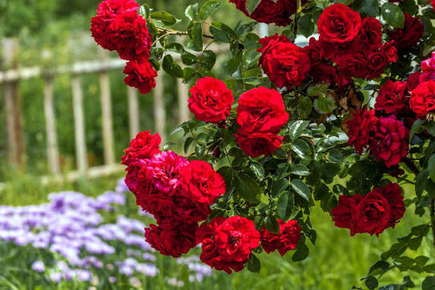
Rose
A timeless flower admired for its elegance, fragrance and vibrant colors.
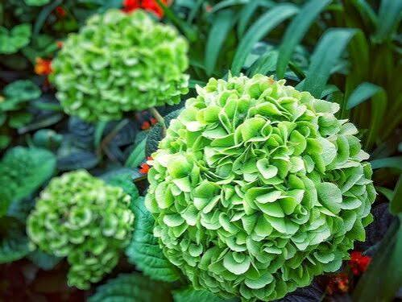
Every season brings new colors to our Botanical Garden. Our collection features roses, lilies, orchids, tulips, daisies and many other beautiful flowers carefully grown by our expert gardeners. Walk through the gallery and enjoy the beauty of nature from every corner of our garden.

A timeless flower admired for its elegance, fragrance and vibrant colors.
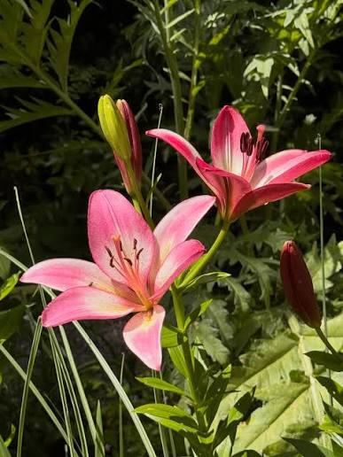
Lilies symbolize purity and are loved for their graceful petals.
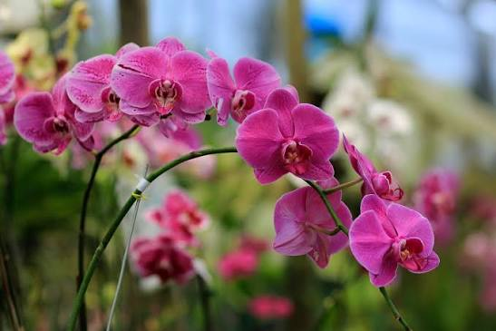
Exotic orchids are among the most fascinating flowering plants.
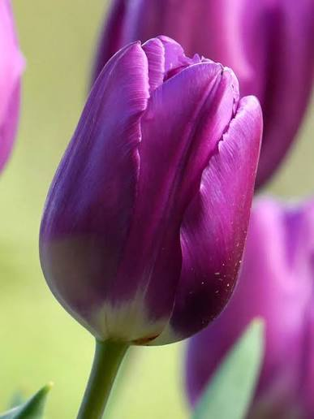
Bright tulips bloom beautifully during the spring season.
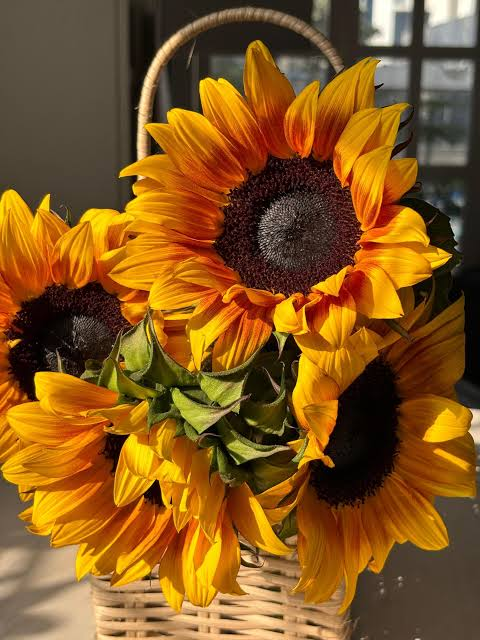
Sunflowers follow the sunlight and brighten every garden with their golden petals.
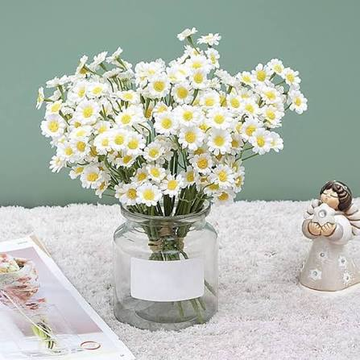
Daisies represent innocence and happiness with their fresh white petals.
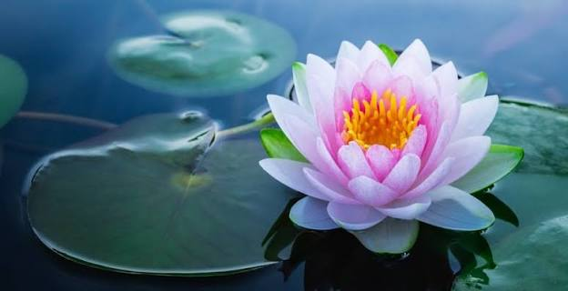
Lotus flowers bloom gracefully above the water and symbolize peace and purity.
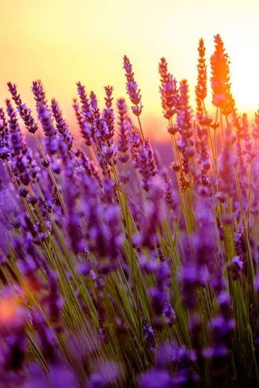
Lavender is famous for its calming fragrance and beautiful purple flowers.
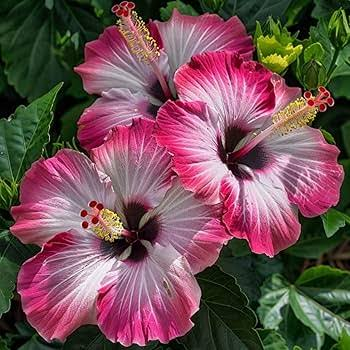
Hibiscus produces large tropical blossoms that attract butterflies and hummingbirds.
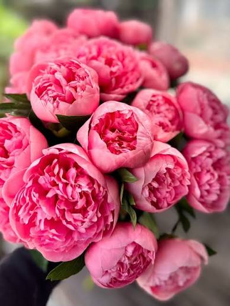
Peonies are admired for their lush petals and pleasant fragrance.
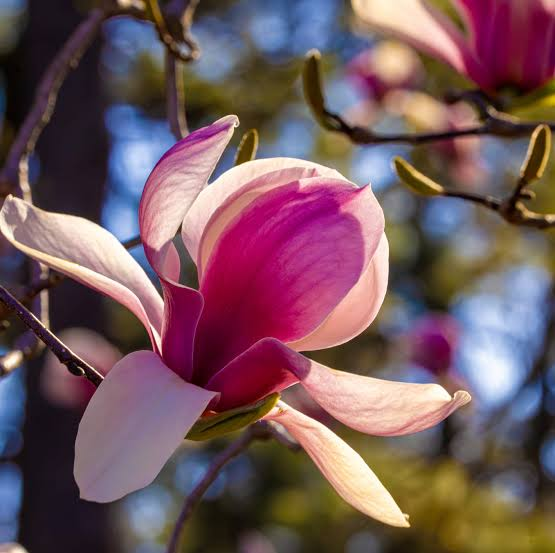
Magnolias are ancient flowering plants known for their elegant blossoms.
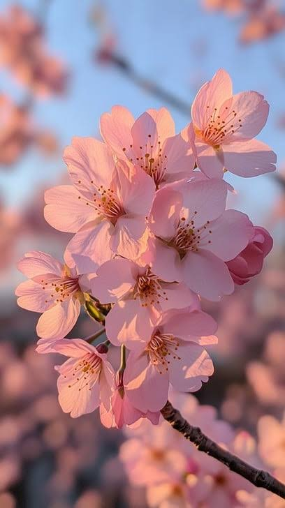
Cherry blossoms transform gardens into a sea of soft pink beauty every spring.
Flower Species
Rare Plants
Professional Gardeners
Annual Visitors
Monday - Sunday
9:00 AM - 7:00 PM
Adults: $10
Children: $5
Photography is allowed. Please protect flowers while taking pictures.